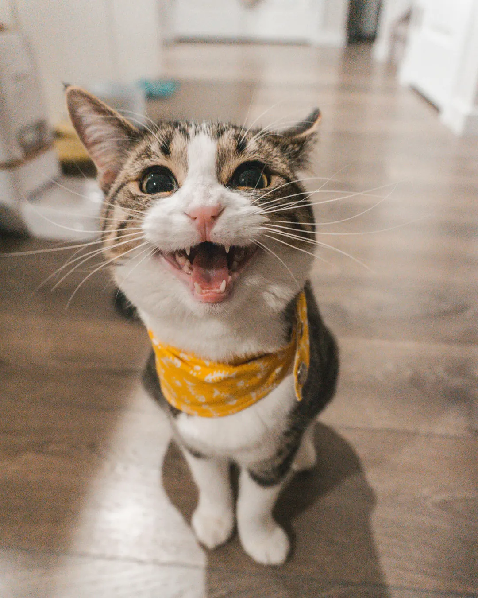
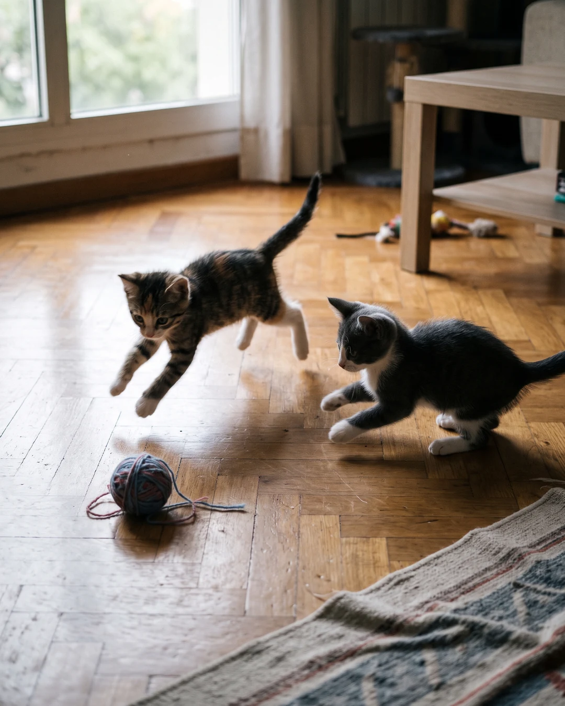

Case #24 · Cats
About this case
Case #24 is closed. It was the daily case for November 24, 2026 and its theme was Cats. The detectives of that day had two challenges: five images to judge as real photographs or AI-made pictures, and five one-sentence claims to judge as facts or fakes.
- AI-generated images: 3 of 5
- Fake claims: 2 of 5
Below you will find every answer. Each AI-generated image comes with the prompt that produced it, and each claim with the truth behind it and the details worth remembering, so you can check what you missed.
One of the fakes: “In the 1970s, a cat was briefly chosen as king in Egypt.” The truth: There is no historical record; in the 1970s Egypt was a republic led by Anwar el-Sadat.
Want to sharpen your eye? Read our guide to spotting AI images or our guide to spotting fake news, then play today's case.
Images
-
Image 1
REAL
Real photograph
-
Image 2

REAL
Real photograph
-
Image 3
AI
The suspect's confession
A tabby cat asleep on the back of a sofa next to a window, with afternoon light coming in from the side and a few loose hairs on the upholstery; 50 mm at f/2, focus on the face and the rest slightly blurred.
-
Image 4

AI
The suspect's confession
A black stray cat sitting on a stone wall in a village, glancing sideways at the camera, with a small notch in one ear; 135 mm telephoto lens and a blurred background of whitewashed facades.
-
Image 5

AI
The suspect's confession
Two kittens playing on the wooden floor of a living room, one of them blurred mid-jump, with a ball of yarn and a piece of rug in the frame; side window light.
Fact or Fake
-
Claim 1
FAKE “In the 1970s, a cat was briefly chosen as king in Egypt.”
There is no historical record; in the 1970s Egypt was a republic led by Anwar el-Sadat.
- Stubbs the cat really was honorary mayor of Talkeetna, Alaska, for 20 years.
-
Claim 2
FACT “Cats have crystals in the inner ear that work like a gyroscope and give them almost perfect balance.”
Tiny calcium carbonate crystals called otoliths tell the brain exactly where the head is relative to gravity.
- They power the righting reflex that lets cats land on their feet.
-
Claim 3
FACT “In 1988, a Briton died and left his fortune of 7 million pounds sterling solely to his last surviving cat.”
Antiques dealer Ben Rea left about 7 million pounds to Blackie, the last of his 15 cats, who still holds the Guinness record as the richest cat.
- He chose not to leave the money to his family.
-
Claim 4
FAKE “A Google algorithm discovered that hungry cats purr at the same frequency, universally.”
No algorithm found it; in 2009 biologist Karen McComb (University of Sussex) found a baby-like cry hidden in the purr.
- This "solicitation purr" hides a high-pitched meow of about 220 to 520 Hz.
- It appeals directly to our nurturing instinct.
-
Claim 5
FACT “Cat purring speeds up the healing of tendons and soft tissue, in the cat and in humans in close contact with it.”
Purrs vibrate at a steady 25 to 150 Hz, a range that veterinary studies link to better bone density, less pain and faster tendon repair.
- The benefits would pass to people who hold a cat or keep it on their body.